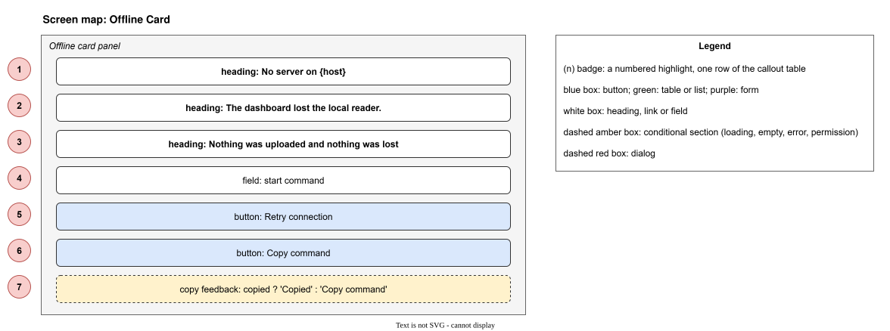

draft draft inferred covers web/src/components/*
Offline card screen map
This map shows the one screen a reader sees when the dashboard cannot reach its local reader. It numbers every part of the screen so a designer or tester can talk about it without reading code. The table in the screen note explains each number.
What the diagram shows
The card stands alone in a grid that fills the viewport height and centres its content, so nothing else of the dashboard is visible while it shows. web/src/components/states.tsx:304-304
Badge 1 marks the red eyebrow that names the host, and badge 2 marks the headline. web/src/components/states.tsx:307-308 web/src/components/states.tsx:310-311
Badge 3 marks the reassurance that nothing was uploaded and that the last scan stays in the local store. web/src/components/states.tsx:313-315
Badge 4 marks the start command in a code block. web/src/components/states.tsx:317-317
Badge 5 marks Retry connection, which calls the function the page passed in. web/src/components/states.tsx:319-319
Badge 6 marks Copy command, and the dashed box 7 shows that its label changes to Copied while the copied state is true. web/src/components/states.tsx:320-321
Capability and related functionality
The map realises the offline experience of the dashboard. The numbered table and the diagnosis are in Offline card Screen. Failure paths around it are in Offline and error handling flow, and the composition is in Dashboard component composition. The page that decides when to show it is described in Web Overview.
Offline card screen map

Code references
| Code | What it shows |
|---|---|
web/src/components/states.tsx:307-308 |
Badge 1 |
web/src/components/states.tsx:310-311 |
Badge 2 |
web/src/components/states.tsx:313-315 |
Badge 3 |
web/src/components/states.tsx:317-317 |
Badge 4 |
web/src/components/states.tsx:319-319 |
Badge 5 |
web/src/components/states.tsx:320-322 |
Badge 6 |
web/src/components/states.tsx:321-321 |
Badge 7 |